Префектура Хоккайдо · Сираой, озеро Порото · онсэн-рёкан
KAI Poroto: онсэн с острыми крышами на берегу озера Порото, по соседству с айнским центром Упопой
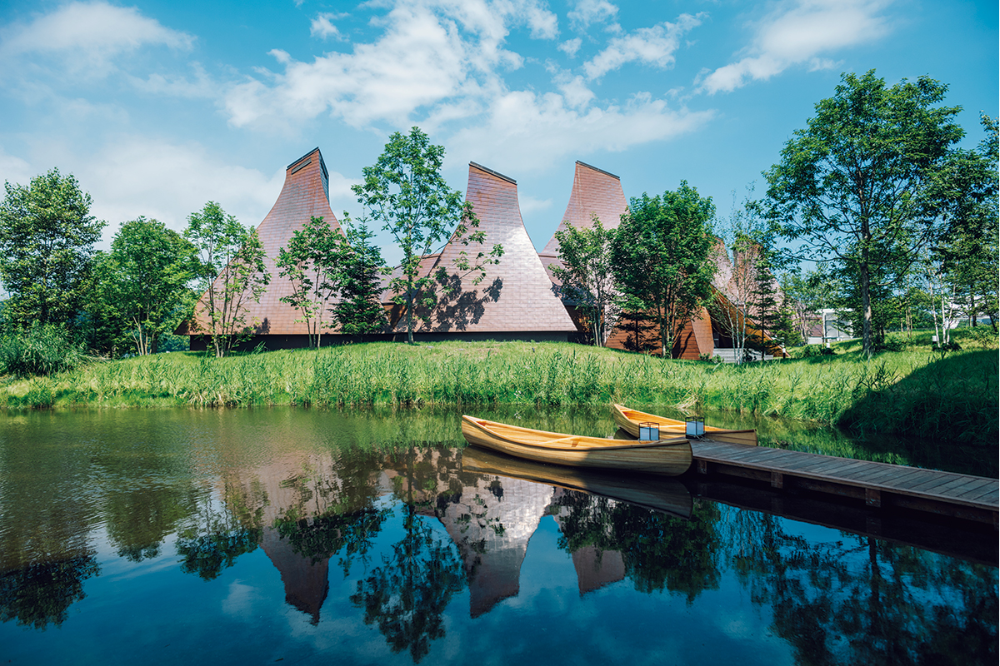
В январе 2022 года на берегу озера Порото в Сираое открылся первый на Хоккайдо рёкан сети KAI. Здесь купаются в редкой бурой воде под крышами, придуманными по образцу айнского шалаша, а от дверей рукой подать до национального центра айнской культуры.
Место
Большое озеро и лес вокруг
От аэропорта Нью-Титосэ до Сираоя около 40 минут на машине. Город стоит на тихоокеанском берегу Хоккайдо, а чуть в стороне от центра лежит озеро Порото. На айнском языке «порото» значит «большое озеро». Вокруг него растёт лес Порото, где живут около 80 видов птиц, а ещё хоккайдские олени, лисы, белки и летяги.
Сеть Hoshino Resorts открывает онсэн-рёканы под маркой KAI по всей Японии. KAI Poroto начал принимать гостей 14 января 2022 года: это девятнадцатый рёкан сети и первый на Хоккайдо. Его девиз можно перевести как «гостиница банных домиков с острыми крышами в объятиях озера Порото».
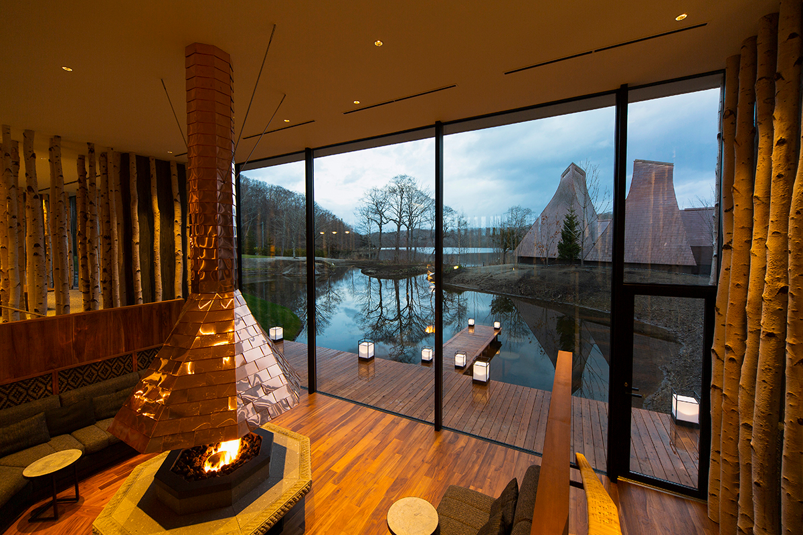
Воду озера провели прямо на территорию, поэтому, где бы гость ни находился, вода оказывается рядом, и кажется, будто гостиница стоит в самом озере.
Онсэн
Две бани: треугольная и круглая
Обе бани на территории наполняет «моор-онсэн». Так называют источник, в воде которого растворены органические вещества растительного происхождения; в мире такие источники встречаются редко. Вода светло-бурая, слабощелочная, по составу простая, и после неё кожа становится гладкой, поэтому её знают как «воду красоты».
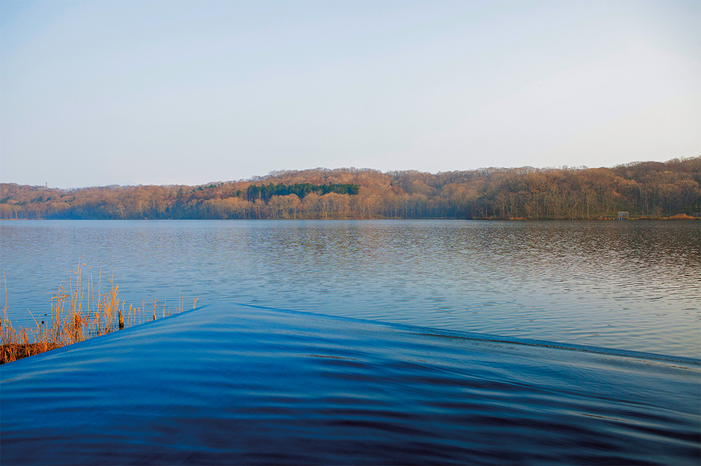
«Треугольная баня» (Санкаку-но ю) и есть те самые домики с острыми крышами. Архитектор Хироси Накамура придумал их по образцу «кэтунни», трёхногой опоры, на которой айны ставили временные шалаши. Внутри просторно и светло, а потолок уходит высоко вверх.
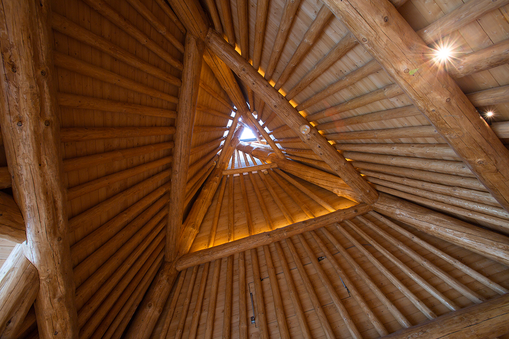
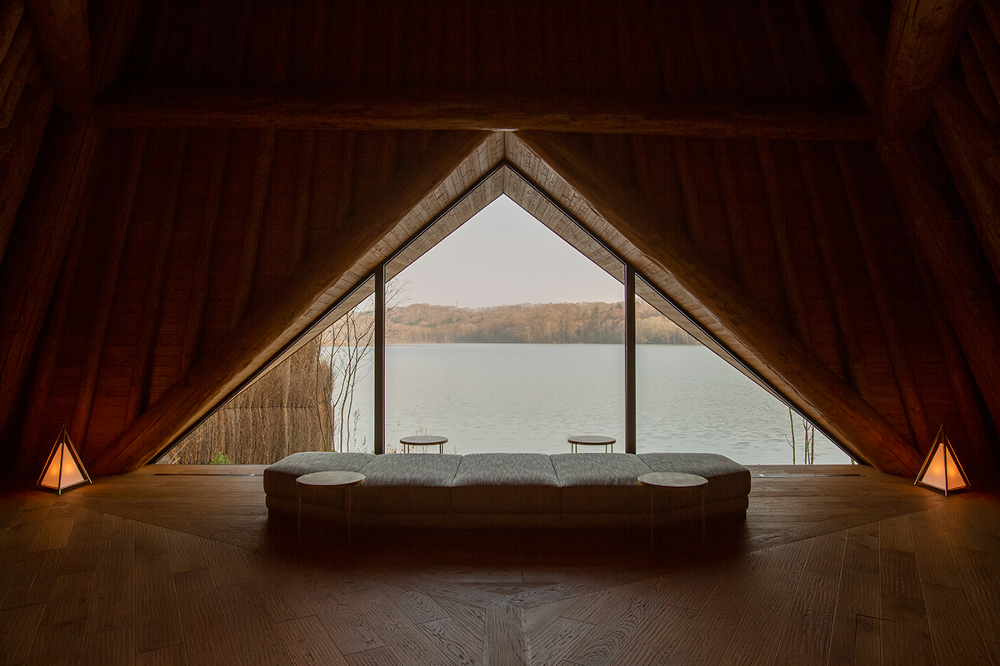
«Круглая баня» (Мару-но ю) устроена наоборот. Это закрытое помещение, похожее на пещеру: здесь ощущаешь себя внутри земли, в тишине, рядом с тем местом, откуда поднимается источник.
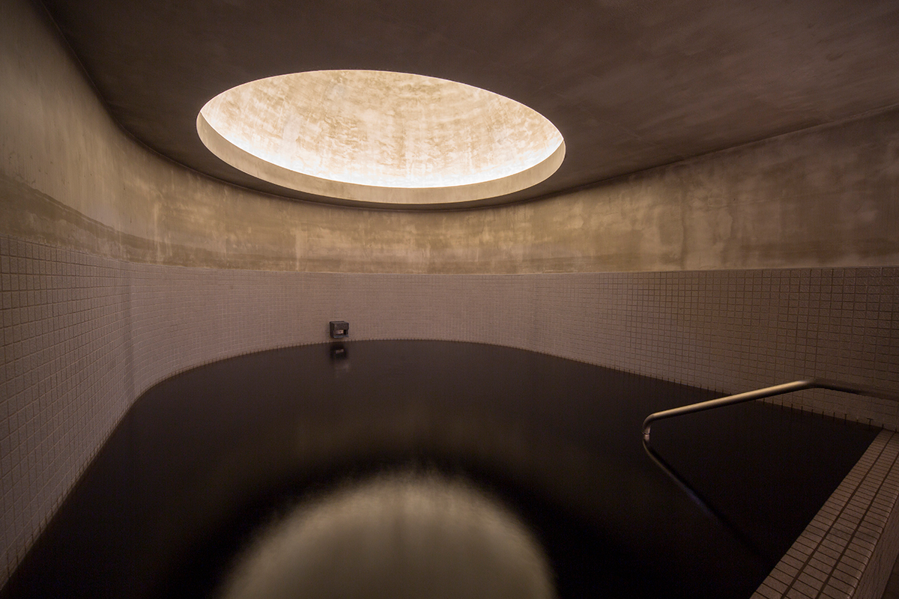
Накамура строит то, что может появиться только в одном месте, и исходит из истории, культуры и ремёсел округи. Его бюро NAP Architects проектировало всю гостиницу, но больше всего внимания досталось баням, их форме и материалам. За один приезд можно попробовать обе: открытую «Треугольную» и земную «Круглую».
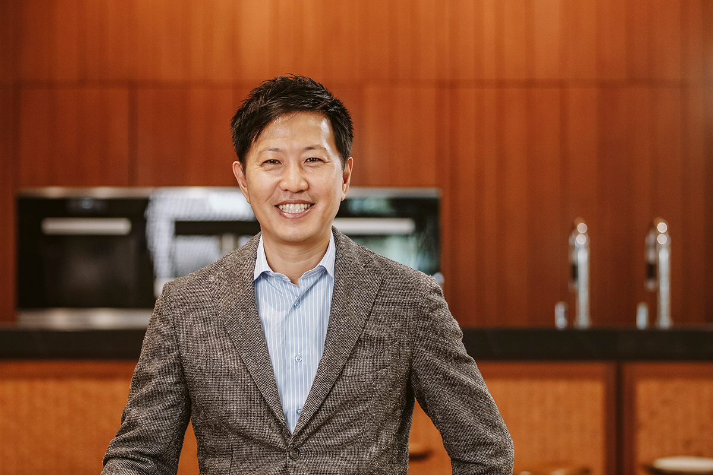
Номера
Айнский дом с собственной купальней
В гостинице 42 номера, и только три из них особые. Они сделаны по мотивам «тисэ», традиционного айнского дома.
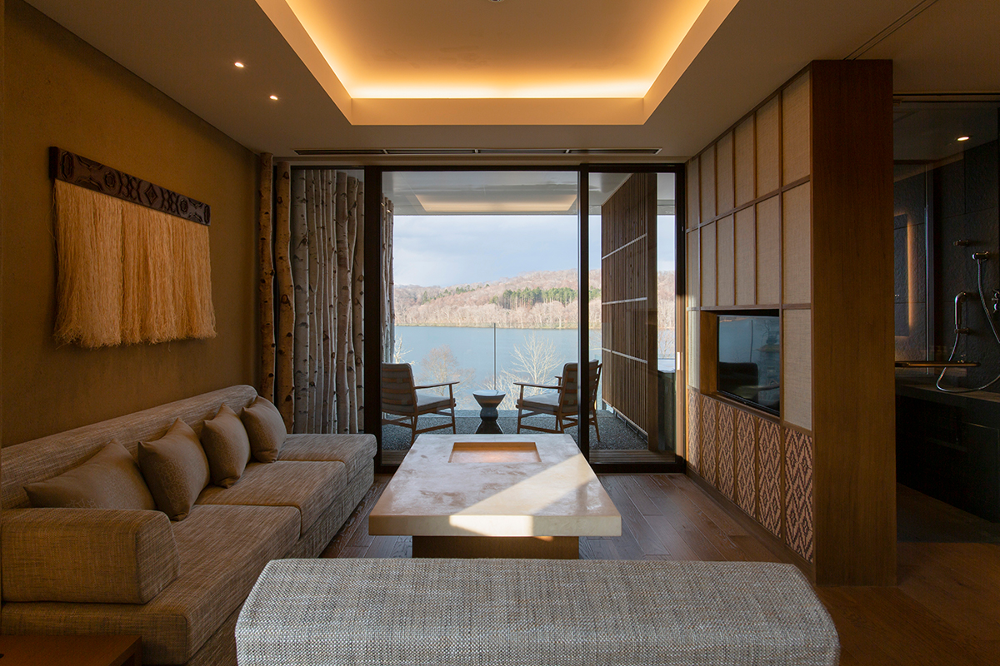
При каждом таком номере есть своя открытая купальня с водой онсэна. Утром и вечером вид на озеро достаётся только вам. У окна поставили письменный стол, так что здесь можно и поработать.
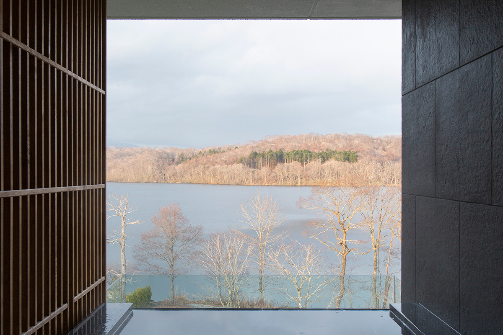
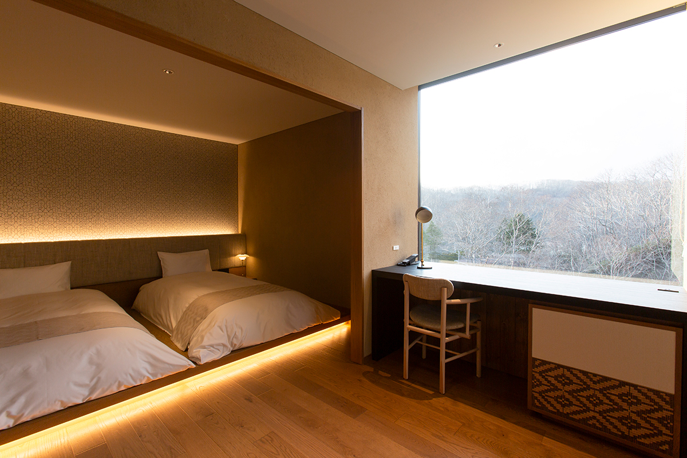
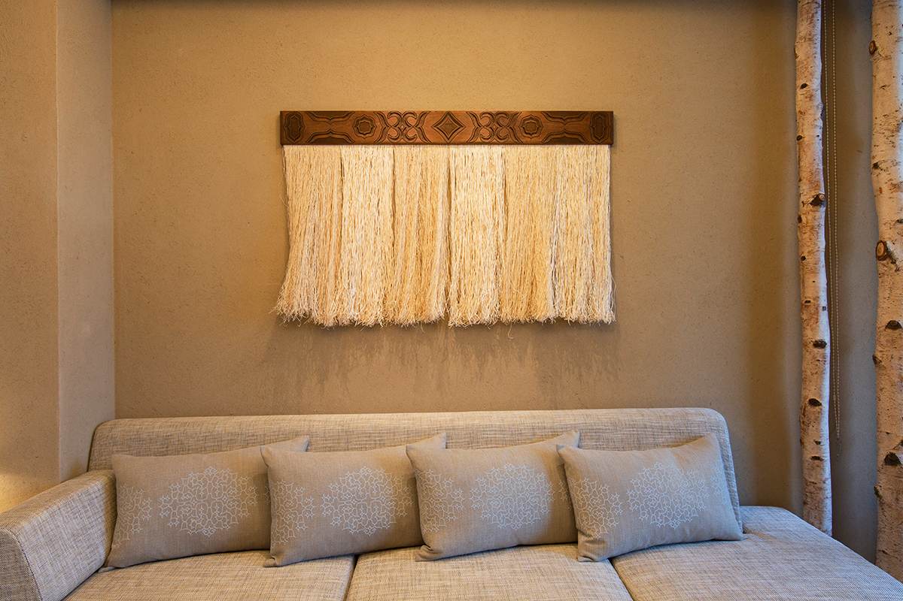
Есть и другие номера в духе айнского дома. В центре жилища айнов был квадратный очаг, и стол в номере повторяет его форму, а обои и подушки покрывает айнский узор.
Айны
Почему здесь столько айнской культуры
У гостиницы две причины говорить об айнах. В Сираое была айнская деревня, котан, которую сохраняли как место, где передают айнскую культуру. А рядом с KAI Poroto раскинулся национальный центр айнской культуры Упопой. Перед открытием рёкан подписал соглашение о партнёрстве с городом Сираой и решил стать местом, где уважают айнскую культуру и учатся жить рядом с другими народами.
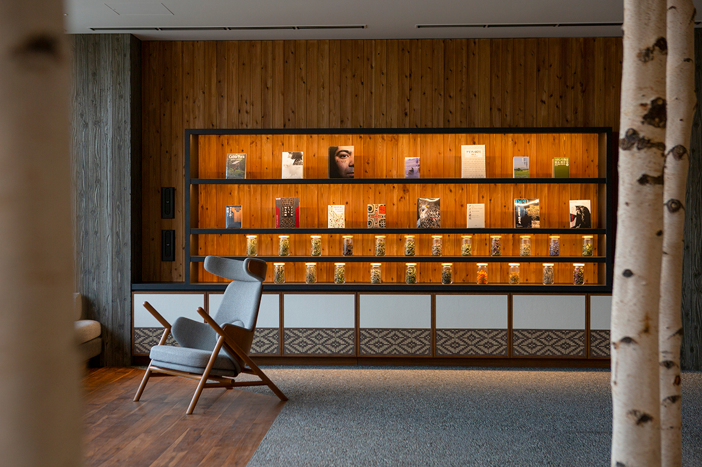
Во всех рёканах KAI есть номера в местном стиле и занятия, на которых знакомят с ремёслами и обычаями округи. В KAI Poroto айнский взгляд на мир встречает гостя в номере, в бане и за столом. Приветственный напиток здесь «энто-тя», травяной чай, который айны пили каждый день, чтобы держать болезни подальше. Одно из занятий построено вокруг айнских оберегов.
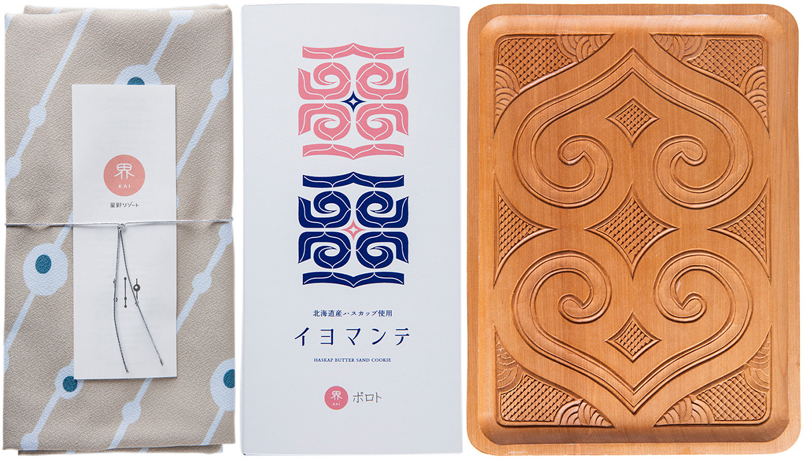
После тёплой воды у озера стоит дойти до соседнего центра Упопой, чтобы лучше понять айнов и их культуру. О нём у нас есть отдельная статья: Упопой.
Ужин
Хоккайдо на тарелке
Ужин в KAI Poroto это кайсэки из продуктов Хоккайдо, и посуда к нему тоже рассказывает об айнах.
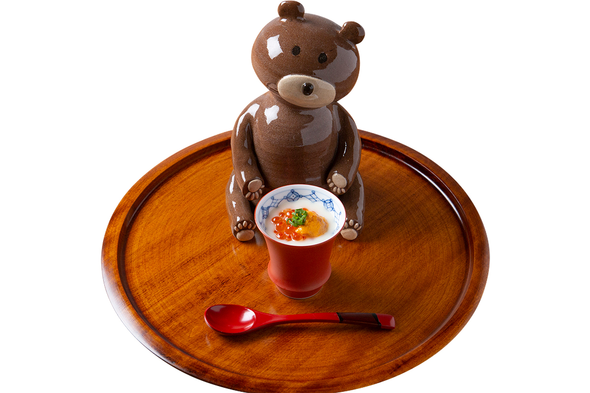
Главное блюдо особого ужина это «котёл дайго» с волосатым крабом и гребешками. Основа похожа на буйабес из морепродуктов, к ней добавляют мисо и бульон из комбу, а потом томят в нём краба, гребешки, лосося и другие хоккайдские продукты.
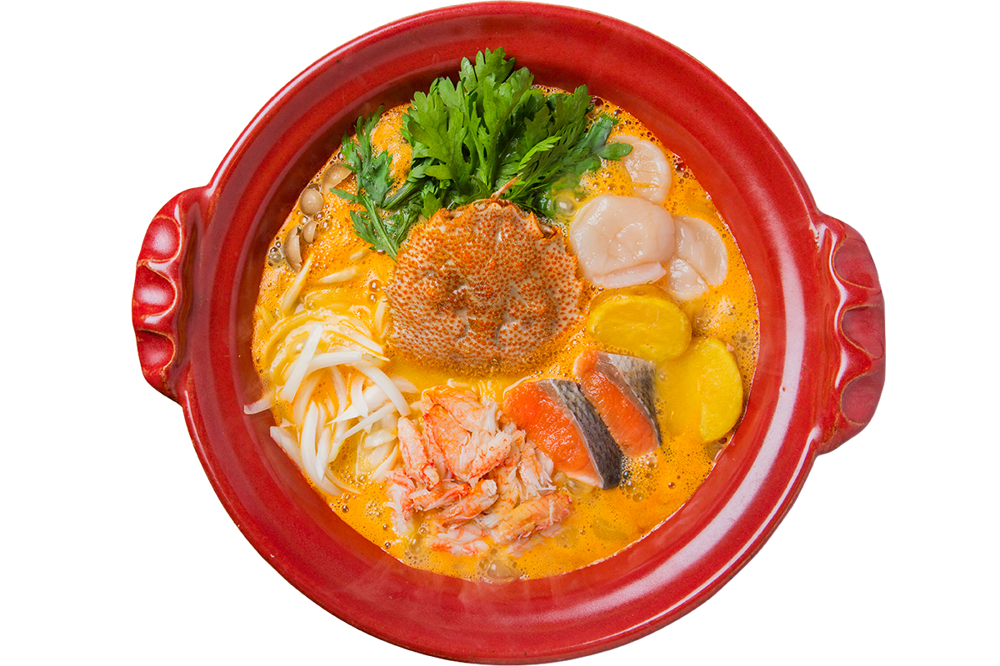
Маринованные закуски, ассорти и сашими приносят на одном блюде в форме лодки. Это айнская долблёная лодка, на которой айны ходили торговать.
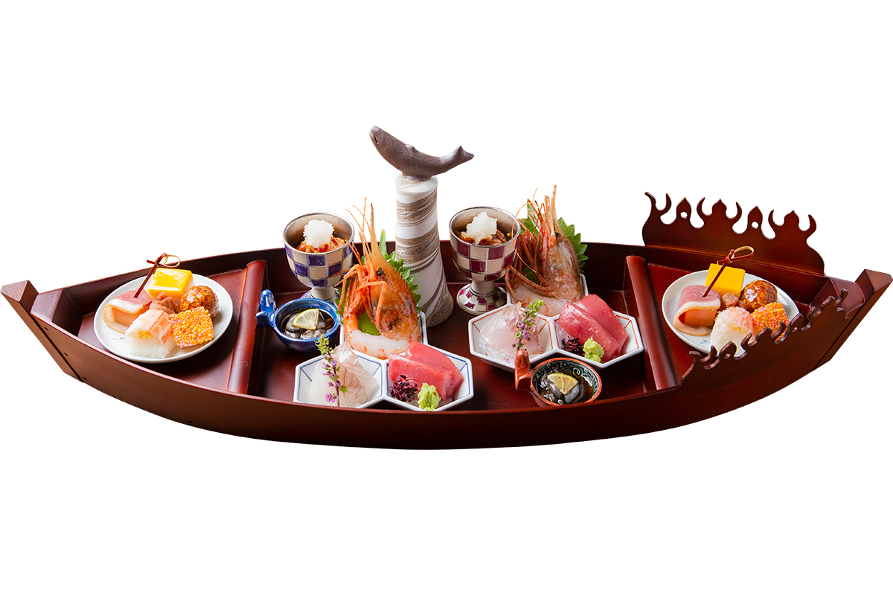
К ужину стоит заказать дегустацию сакэ трёх пивоварен Хоккайдо: в 2022 году она стоила 1500 иен.
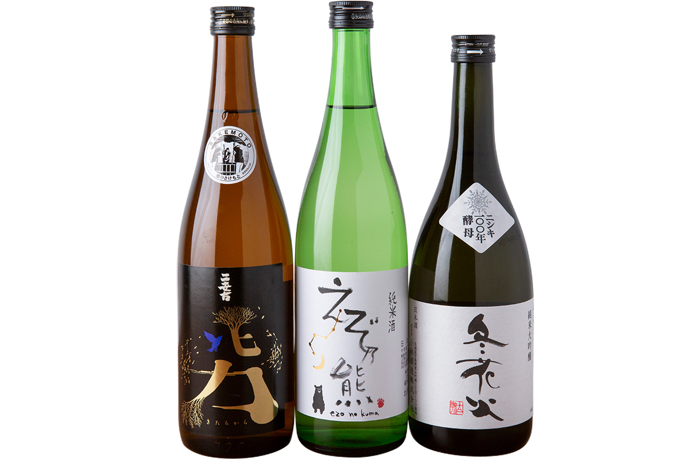
KAI Poroto
- Адрес
- префектура Хоккайдо, уезд Сираой, Сираой, Вакакуса-тё, 1-1018-94
- Телефон
- +81 570-073-011 (центр бронирования KAI)
- Номера
- 42
- Цены / Вход
- от 31 000 иен с человека за ночь с ужином и завтраком при двух гостях в номере, с налогом и сервисным сбором (2022)
- Заезд / выезд
- 15:00 / 12:00
- Как добраться
- около 40 минут на машине от аэропорта Нью-Титосэ; 10 минут пешком от станции JR Сираой
Фото: Хироюки Кудо.